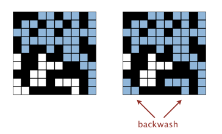

作业2：渗透 常见问题
常见问题
如果T等于1，
stddev()
应该返回什么？
样本标准差是未定义的。我们建议返回 Double.NaN，但我们不会测试这种情况。
系统渗透后，
PercolationVisualizer
将所有与底部开放站点相连的站点（除了与顶部开放站点相连的站点之外）都染成浅蓝色。这种"回流"现象可以接受吗？
虽然允许回流并不严格符合渗透API，但要解决这个问题需要相当多的创造力，而且如果不这样做，只会被扣少量分数。

如何在所有阻塞站点中均匀随机地生成一个站点，用于
PercolationStats
？
随机选择一个站点（通过使用
StdRandom
或其他库生成两个 0（含）到 N（不含）之间的整数，如果该站点是阻塞的就使用它；如果不是，则重复此过程）。
当N = 200时，我在
PercolationStats
中得不到可靠的计时信息。我该怎么办？
增大 N 的大小（例如 400、800 和 1600），直到平均运行时间超过其标准差。
我的卡方检验失败了，但其他测试都通过了。
问题在于你对多次模拟使用了相同的随机种子，而统计测试发现了它们是相同的事实。
如果你查看
StdRandom
的代码，你会看到它只设置一次种子（第一次使用
StdRandom
时），这可以避免种子重置的问题。总之，不要自己设置种子。
另外，确保你没有生成有偏的随机数。你应该使用生成整数的
StdRandom
方法，而不是生成浮点数的方法。
它提示我的代码对
percolates()
返回"false"，但当我运行可视化工具时得到的istrue！
可视化工具执行非常特定的
是Open()
/
是Full()
/
percolates()
调用序列。尝试创建你自己的测试，只打开站点然后调用
percolates()
。或者，禁用可视化工具中的所有
是Open()
和/或
是Full()
调用，这样你就可以专注于
percolates()
行为。另外，仔细关注标记为
Random Operation Order
的测试。
我的代码在我的电脑上能编译，但在自动评分器上不能编译。
你的代码必须严格遵守API。你不能向
Percolation
类添加额外的公共方法或变量。当我们测试你的
PercolationStats
时，我们使用参考版本的Percolation而不是你的版本，以避免级联错误——这意味着你不能假设任何额外的公共方法可用。
如何选择要运行的文件？如何通过命令行/程序参数在IntelliJ中传递参数？
首先，导航到 Run -> Edit Configurations。你可以在那里设置不同的调试客户端来运行不同的类作为你的"主类"（这意味着程序将开始和结束于你的主类内的"main"函数）。你可以通过左上角的小加号来设置一个新的客户端——对于本课程的目的，你只需要设置一个Application。然后你可以随意命名你的配置，选择你想要的该配置的主类，也可以在程序参数字段中设置任何命令行/程序参数。在该字段中输入程序参数，就像你在终端中一样——用单行空格分隔参数。